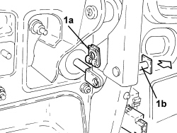
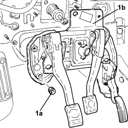
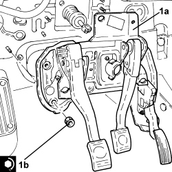

3330B02 PEDAL ASSEMBLY - R.R
- Path
- Procedures > 33 BRAKES > 3330 HYDRAULIC BRAKE SYSTEM > 3330B PEDAL UNIT > 3330B02 PEDAL ASSEMBLY - R.R
- Kind
- repair procedure (removal / refitting; the operation number is the code)
- Applies to
- all engines; all production periods
- Interactive page
- https://sloeber94.github.io/elrnDB/alfa/159/en/#/939010792
Applies to: all engines; all production periods
 Removing
Removing
 Refitting
Refitting- Make sure that the ignition key is in the OFF position, then disconnect the battery terminal (-).
Description | Connector | |
|---|---|---|
- | Battery |
Op. 0010T84 COOLANT FOR AIR CONDITIONING SYSTEM - DEHYDRATE AND REPRESSURIZE
Op. 7210E36 R.R. FRONT SIDE DOOR
Op. 5010C30 CENTRAL AIR VENT IN DASHBOARD - R.R.
Op. 5010C12 WINDSCREEN DEMISTER DIFFUSER - R+R
Op. 5010D56 SOLAR SENSOR - R.R FOLLOWING ELECTRICAL SYSTEM CHECK
Op. 7040A44 LEFT DASHBOARD SIDE TRIM - R.R.
Op. 5580C18 AIR BAG MODULE - R+R
Op. 4110A10 STEERING WHEEL - R+R FOR REPLACEMENT OR CHECKS
Op. 7040A26 STEERING COLUMN TRIM - R+R
Op. 5560B10 CONTROL PANEL - R+R
Op. 7040A45 RIGHT DASHBOARD SIDE TRIM - R.R.
Op. 7040A31 DASHBOARD COMPARTMENT ASSEMBLY - R.R.
Op. 5580C22 AIR BAG MODULE - PASSENGER SIDE - R.R
Op. 7040A58 INSTRUMENT PANEL MOULDING - R+R
Op. 5580C26 PASSENGER AIR BAG DISABLING KEY LOCK BARREL/SWITCH - R.R.
Op. 5010C55 LOWER AIR DIFFUSER (ONE) LH OR RH - R.R
Op. 7040A65 CONSOLE SIDE CLOSING (ONE) - R.R.
Op. 5010C32 AIR VENT ON TUNNEL COVER FOR REAR SEATS - R.R.
Op. 7040L20 TUNNEL COVER - R.R
Op. 5580C23 DRIVE SIDE KNEE PROTECTION AIR BAG MODULE R. R.
Op. 5040D18 AIR CONDITIONING CONTROL UNIT - R.R.
Op. 7040A10 DASHBOARD TRIM - R+R
Op. 7040L06 PASSENGER COMPARTMENT FLOOR RIGHT FRONT CARPET - R. R.
Op. 5010B70 SIDE CONNECTOR BRACKETS ONE, LH OR RH, BETWEEN AIR CONDITIONER CASING AND DUCT FOR R
(left and right).
Op. 5010B46 CENTRAL AIR DUCT TO REAR SEATS - R.R.
Op. 5050B34 WINDSCREEN WIPER ARM/S COMPLETE WITH BLADE - R+R
Op. 7025A64 ENGINE COMPARTMENT GASKET - R.R.
Op. 7210E22 R.R. WINDSCREEN BASE TRIM
Op. 5050B38 WINDSCREEN WIPER ASSEMBLY - R+R OR REPAIR
Op. 7040A89 REINFORCEMENT BRACKET BETWEEN DASHBOARD SUPPORTING CROSSMEMER AND BODYSHELL - R.R.
Op. 4110A30 SUPPORT WITH STEERING CONTROL SHAFTS - R+R
1. Disconnect the electrical connection from the brake fluid minimum level warning light switch.
Description | Connector | |
|---|---|---|
1 | Brake fluid level sensor (switch) |
2. Undo the bolts fixing the brake servo to the pedal assembly.

Applies to: all engines; all production periods
1. Disconnect the flexible pipe from the clutch reservoir to the master cylinder, master cylinder side.
2. Lift the retaining clip (2a) and disconnect the clutch hydraulic circuit vibration damper (2b), clutch master cylinder side.

Applies to: all engines; all production periods
1. Disconnect the electrical connection from the accelerator pedal with built in potentiometer.
Description | Connector | |
|---|---|---|
1 | Accelerator pedal potentiometer |
2. Disconnect the electrical connection from the brake pedal switch.
Description | Connector | |
|---|---|---|
2 | Brake pedal switch |

Applies to: all engines; all production periods
1. Remove the retaining clip (1a) and move back pin (1b) connecting the brake pedal to the brake servo.
2. Turn the switch on the brake pedal clockwise through 90° and remove.

Applies to: all engines; all production periods
1. Disconnect the electrical connection from the clutch pedal switch.
Description | Connector | |
|---|---|---|
1 | Clutch pedal switch |
2. Turn the clutch pedal switch clockwise through 90° and remove.
3. Withdraw the pin connectng the clutch pump to the pedal.

Applies to: all engines; all production periods
1. Undo the nuts (1a) and remove the pedal assembly (1b).

Applies to: all engines; all production periods
Refitting
Removing1. Position the pedal assembly (1a) in its housing and secure it by tightening the nuts (1b) to the recommended torque.
Component | Fastening | dia | Value (daNm) | Validity |
|---|---|---|---|---|
Pedal assembly | Nut | M8 | (bodyshell side) 2.2 - 2.6 |

Applies to: all engines; all production periods
- Refit a new pin to connect the clutch pump to the pedal.
- Press the clutch pedal, then refit the cluch pedal switch and turn through 90° anticlockwise until it fits into place on the ridge.
- Release the clutch pedal and pull it backwards until it is at the end of its travel (rest position).
- Operate the clutch pedal through a full cycle to settle the switch.
- Connect the electrical connection to the clutch pedal switch.
- Refit the pin connecting the brake pedal to the brake servo and secure with the clip.
- Press the brake pedal, then refit the switch in its seat on the brake pedal and turn through 90° anticlockwise until it is fully home.
- Release the brake pedal.
- Connect the electrical connection to the brake pedal switch.
- Connect the electrical connection to the accelerator pedal with built in potentiometer.
- Fit the retaining clip fully, then fit the clutch hydraulic circuit vibration damper on the clutch master cylinder until the clip fastens.
- Connect the flexible pipe from the clutch reservoir to the master cylinder, master cylinder side.
1. Tighten the bolts fixing the brake servo to the pedal assembly to the recommended torque.
Component | Fastening | dia | Value (daNm) | Validity |
|---|---|---|---|---|
Brake servo | Bolt | M8 | (pedal assembly side) 2.2 - 2.6 |
2. Connect the electrical connection to the brake fluid minimum level warning light switch.

Applies to: all engines; all production periods
Op. 4110A30 SUPPORT WITH STEERING CONTROL SHAFTS - R+R
Op. 7040A89 REINFORCEMENT BRACKET BETWEEN DASHBOARD SUPPORTING CROSSMEMER AND BODYSHELL - R.R.
Op. 5050B38 WINDSCREEN WIPER ASSEMBLY - R+R OR REPAIR
Op. 7210E22 R.R. WINDSCREEN BASE TRIM
Op. 7025A64 ENGINE COMPARTMENT GASKET - R.R.
Op. 5050B34 WINDSCREEN WIPER ARM/S COMPLETE WITH BLADE - R+R
Op. 5010B46 CENTRAL AIR DUCT TO REAR SEATS - R.R.
Op. 5010B70 SIDE CONNECTOR BRACKETS ONE, LH OR RH, BETWEEN AIR CONDITIONER CASING AND DUCT FOR R
(left and right).
Op. 7040L06 PASSENGER COMPARTMENT FLOOR RIGHT FRONT CARPET - R. R.
Op. 7040A10 DASHBOARD TRIM - R+R
Op. 5040D18 AIR CONDITIONING CONTROL UNIT - R.R.
Op. 5580C23 DRIVE SIDE KNEE PROTECTION AIR BAG MODULE R. R.
Op. 7040L20 TUNNEL COVER - R.R
Op. 5580C22 AIR BAG MODULE - PASSENGER SIDE - R.R
Op. 5010C32 AIR VENT ON TUNNEL COVER FOR REAR SEATS - R.R.
Op. 7040A65 CONSOLE SIDE CLOSING (ONE) - R.R.
Op. 5010C55 LOWER AIR DIFFUSER (ONE) LH OR RH - R.R
Op. 5580C26 PASSENGER AIR BAG DISABLING KEY LOCK BARREL/SWITCH - R.R.
Op. 7040A58 INSTRUMENT PANEL MOULDING - R+R
Op. 5580C22 AIR BAG MODULE - PASSENGER SIDE - R.R
Op. 7040A31 DASHBOARD COMPARTMENT ASSEMBLY - R.R.
Op. 7040A45 RIGHT DASHBOARD SIDE TRIM - R.R.
Op. 5560B10 CONTROL PANEL - R+R
Op. 7040A26 STEERING COLUMN TRIM - R+R
Op. 4110A10 STEERING WHEEL - R+R FOR REPLACEMENT OR CHECKS
Op. 5580C18 AIR BAG MODULE - R+R
Op. 7040A44 LEFT DASHBOARD SIDE TRIM - R.R.
Op. 5010D56 SOLAR SENSOR - R.R FOLLOWING ELECTRICAL SYSTEM CHECK
Op. 5010C12 WINDSCREEN DEMISTER DIFFUSER - R+R
Op. 5010C30 CENTRAL AIR VENT IN DASHBOARD - R.R.
Op. 7210E36 R.R. FRONT SIDE DOOR
Op. 0010T84 COOLANT FOR AIR CONDITIONING SYSTEM - DEHYDRATE AND REPRESSURIZE
Op. 0010T64 BRAKE AND/OR CLUTCH FLUID CHECK LEVEL AND TOP UP AS NECESSARY
Op. 0010T67 HYDRAULIC CLUTCH SYSTEM - BLEED AIR
- Connect the negative battery terminal.
Topics linked from this page (38)
- 0010T64 BRAKE AND/OR CLUTCH FLUID CHECK LEVEL AND TOP UP AS NECESSARY
- 0010T67 HYDRAULIC CLUTCH SYSTEM - BLEED AIR
- 0010T84 COOLANT FOR AIR CONDITIONING SYSTEM - DEHYDRATE AND REPRESSURIZE
- 4110A10 STEERING WHEEL - R+R FOR REPLACEMENT OR CHECKS
- 4110A30 SUPPORT WITH STEERING CONTROL SHAFTS - R+R
- 5010B46 CENTRAL AIR DUCT TO REAR SEATS - R.R.
- 5010B70 SIDE CONNECTOR BRACKETS ONE, LH OR RH, BETWEEN AIR CONDITIONER CASING AND DUCT FOR R
- 5010C12 WINDSCREEN DEMISTER DIFFUSER - R+R
- 5010C30 CENTRAL AIR VENT IN DASHBOARD - R.R.
- 5010C32 AIR VENT ON TUNNEL COVER FOR REAR SEATS - R.R.
- 5010C55 LOWER AIR DIFFUSER (ONE) LH OR RH - R.R
- 5010D56 SOLAR SENSOR - R.R FOLLOWING ELECTRICAL SYSTEM CHECK
- 5040D18 AIR CONDITIONING CONTROL UNIT - R.R.
- 5050B34 WINDSCREEN WIPER ARM/S COMPLETE WITH BLADE - R+R
- 5050B38 WINDSCREEN WIPER ASSEMBLY - R+R OR REPAIR
- 5560B10 CONTROL PANEL - R+R
- 5580C18 AIR BAG MODULE - R+R
- 5580C22 AIR BAG MODULE - PASSENGER SIDE - R.R
- 5580C23 DRIVE SIDE KNEE PROTECTION AIR BAG MODULE R. R.
- 5580C26 PASSENGER AIR BAG DISABLING KEY LOCK BARREL/SWITCH - R.R.
- 7025A64 ENGINE COMPARTMENT GASKET - R.R.
- 7040A10 DASHBOARD TRIM - R+R
- 7040A26 STEERING COLUMN TRIM - R+R
- 7040A31 DASHBOARD COMPARTMENT ASSEMBLY - R.R.
- 7040A44 LEFT DASHBOARD SIDE TRIM - R.R.
- 7040A45 RIGHT DASHBOARD SIDE TRIM - R.R.
- 7040A58 INSTRUMENT PANEL MOULDING - R+R
- 7040A65 CONSOLE SIDE CLOSING (ONE) - R.R.
- 7040A89 REINFORCEMENT BRACKET BETWEEN DASHBOARD SUPPORTING CROSSMEMER AND BODYSHELL - R.R.
- 7040L06 PASSENGER COMPARTMENT FLOOR RIGHT FRONT CARPET - R. R.
- 7040L20 TUNNEL COVER - R.R
- 7210E22 R.R. WINDSCREEN BASE TRIM
- 7210E36 R.R. FRONT SIDE DOOR
- A001 BATTERY
- I030 BRAKE PEDAL SWITCH
- I031 CLUTCH PEDAL SWITCH
- K025 BRAKE FLUID LEVEL SENSOR (SWITCH)
- K055 ACCELERATOR PEDAL POTENTIOMETER